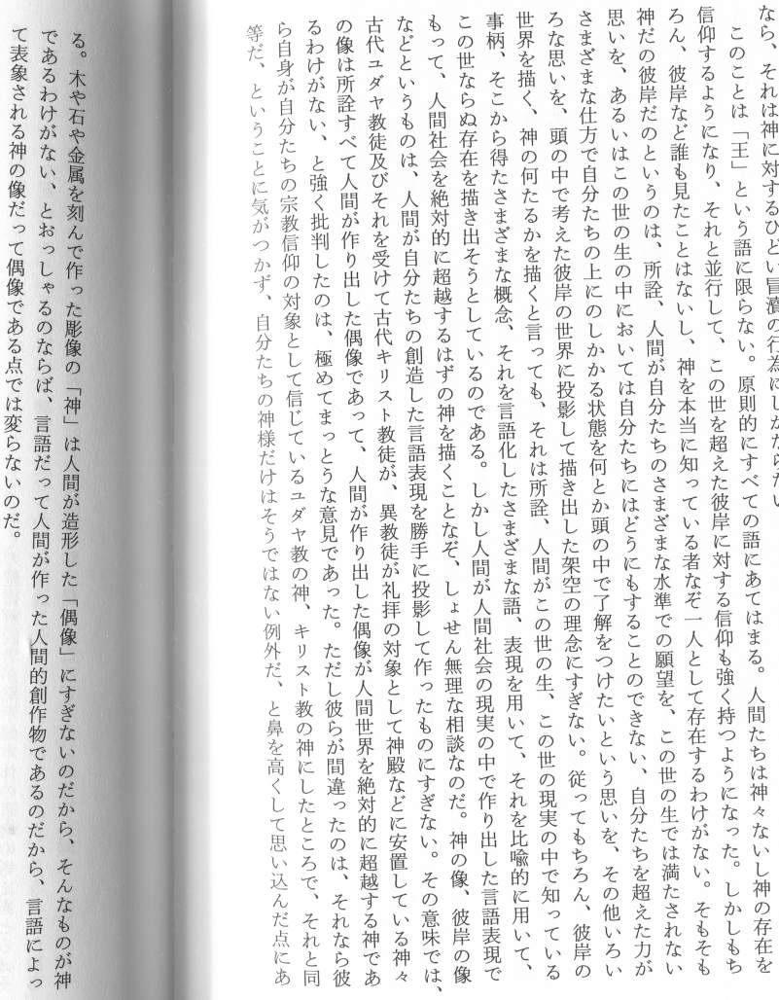
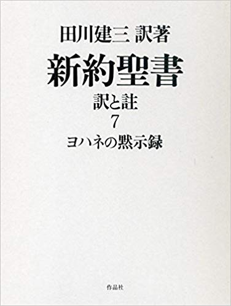

「存在しない神に祈る」とはどういうことか
(image generated by Craiyon. https://www.craiyon.com)
原題： 田川建三：「真のクリスチャンは神を信じない」。なぜなら神は偶像であり、実在しないゆえに。 （全体）
履歴
(2022-08-19) 追加 (2018-08-10) 作成はじめに
・下の過去記事で、「神を信じないクリスチャン」である田川建三が「神は存在しない」と説教した件について言及した。・この（彼は）チャペルで礼拝のとき講壇から「神は存在しない」「存在しない神に祈る」と説教した。 ... 神を信じるとは、神を想像する偶像崇拝であり、「神とは人間がでっちあげた」ものなので、「神を信じないクリスチャン」こそが真のクリスチャンであり、自分は「神を信じないクリスチャン」であるとする。聖書ギリシャ語は教会解釈に逃げているのであり、「私はある意味で聖書を破壊した」という。またイエスという男はほとんど神について語っていないと考えている。 ref: https://ja.wikipedia.org/wiki/%E7%94%B0%E5%B7%9D%E5%BB%BA%E4%B8%89ref: フィリップ・K・ディックの神秘体験とその検証 （＋追加） （2018-08-04）「神とは人間がでっちあげた」ものなので、「神を信じないクリスチャン」こそが真のクリスチャンだという主張の委細を田川建三が解説している文章を記録しておく。引用
出典
 田川 建三、『新約聖書 訳と註 第七巻 ヨハネの黙示録』、作品社、2017/8/31、438頁コメント
・この田川建三の主張には半分同意するが、のこり半分は同意できない。 ・そもそも、私は「クリスチャンであること」に宗教的価値も意義も全く認めない。なので、真のクリスチャンだろうが、モグリのクリスチャンだろうが、好きにしてくれ…という気分。これが同意できない点の一つ。 ・更に… … … … … (2018-08-10 end)
(2022-08-19 begin)前置き
- 4年間、放置状態だったが後始末をつけておく。「存在しない神に祈る」とはどういうことか
- 田川は ・「神は存在しない」 と主張してるが、それは ・「人間がでっちあげた神」（人造の神）は存在しない という意味でしかない。だから、彼はその立場に立って ・「（人造の）神を信じないクリスチャン」こそが真のクリスチャンであり、自分は「（人造の）神を信じないクリスチャン」だ と主張している。 - その上で、田川は「人間がでっちあげたものではない」神、人間の理解も思慮も及ばない「本物の神」を信じている。人間の理解も思慮も及ばないものはそれがなんであれ、人間の知性にとっては「存在しない」ものと等価となる。 - 要するに田川の言う ・「存在しない神に祈る」 とは、 ・人間の理解も思慮も及ばない「本物の神」に祈る という意味でしかない。 - 言い換えると、「本物の神」は知性では理解も思慮も及ばないが、感性・霊性・直感の類でのみ観ることができる。それがゆえに、感性・霊性・直感の類にもとづいて「本物の神」に祈ることが可能となる…これが田川の一見すると逆説的な表現の内実である筈。 - つまり、田川の逆説的表現を平明に言い換えると、以下のようになる。 ・人間が知的・概念的に捉え、表現した神は「存在しない」。存在しないから信じるに値しない。 ・人間がその感性・霊性・直感の類で希求する神こそが本物であり、祈るに値する。その神は知的・概念的には捉えられないという意味では存在しないが、人間が霊的に希求し祈りを捧げる象徴として、感性的には最高度の実在性を持つ。「本物の神」の落とし穴
- ところが、この「本物の神」にも同じ落とし穴がある。この人間がその感性・霊性・直感の類で希求する神こそが本物であり、祈るに値する。その神は知的・概念的には捉えられないという意味では存在しないが、人間が霊的に祈りを捧げる象徴として、感性的には最高度の実在性を持つ。という本物の神もまた、まごうかた無き「人間がでっちあげた神」（人造の神）でしかない。田川は「それ」に祈ることによって ・「存在しない神」というラベルを貼った神 をでっち上げてしまっている。ラベルにどんな能書きが書かれていようが関係ない。「天にまします」であろうが「存在しない」であろうが偶像であるという点では同じこと。偶像に「これは偶像ではない」とラベルを貼れば偶像でなくなるわけではない。 - 最初に掲示した田川の長い文章の文意からすれば、 ・知的・概念的な対象も霊性・直感の対象もどちらも等しく偶像 となる。後者は前者に比べると、内実が曖昧で明確な表現が困難なゆえ、概念操作が難しく、教団組織運営用の教義構築ツールには向かないというだけの話。それゆえ後者は巨大で壮麗な教会建築や教会音楽、凝った儀式などの感性に訴えるツールとして利用されてきた。田川の「存在しない神」も所詮は虚構
- 田川の言う「存在しない神」も下の過去記事で述べた宗教的境地と同様の（だがかなりマイナーな）規範幻想であり、虚構でしかない。さらに言えば…。宗教的境地は共同体の間で共有される模範幻想の一種ですから、多数派の凡人にもそれがある程度は察知できなければなりません。誰にも察知できない宗教的境地は存在しないのと同じです。もともとが幻想ですから、実体はありません。なので曖昧に察知されるだけの虚構的存在です。虚構ですが、カネと同じで共同体に強い影響を及ぼし、構成員の思考パターンを支配します。 宗教的境地に関する「相手がどの程度の境地に達しているのかは自分もその境地に達していないと判断できない」という発想それ自体もまた、共同体の間で共有される模範幻想に含まれています。日本でいえば、悟りとはこういうものだ、悟った人物の行いはこういうものだ…という模範幻想がそれで、禅語録の類がその普及の役割を担ってきました。 卑近な例で喩えると、宗教的境地は、講談話におけるヤクザの親分の「貫禄」みたいなものです。ヤクザ社会という共同体の間で共有される模範幻想の一種が「貫禄」です。禅語録に対応するのが講談話でどちらも虚構のオハナシです。 ref: 宗教的境地とは何か。 (2020-12-29)(2022-08-19 end)
初出
田川建三：「真のクリスチャンは神を信じない」。なぜなら神は偶像であり、実在しないゆえに。 （全体） (2022-08-19)